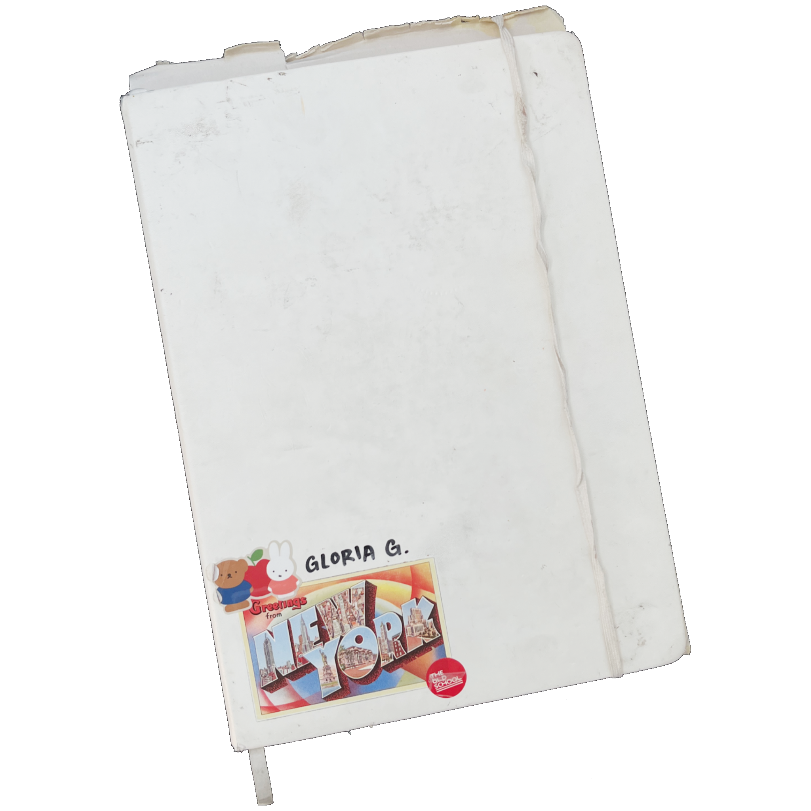

As a graphic design major, most of my creative process is done online. However, one of my favourite parts of a project is the very beginning, the research stage. Brainstorming, making collages, and compiling research is what I put most emphasis on when I'm working on anything as it's the basis for everything I'm about to design. Plus, I'm a big fan of scrapbooking. I will say as the semester progresses, I've had increasingly less time to brainstorm as the deadlines get so demanding. So, this is me sort of reminiscing my past projects and the ideating I did for them ⠀⠀⠀. . ﾟ . . ✦ , . ⠀⠀⠀⠀⠀⠀⠀⠀⠀⠀⠀⠀⠀⠀⠀⠀⠀ * .. . ✦⠀ ,